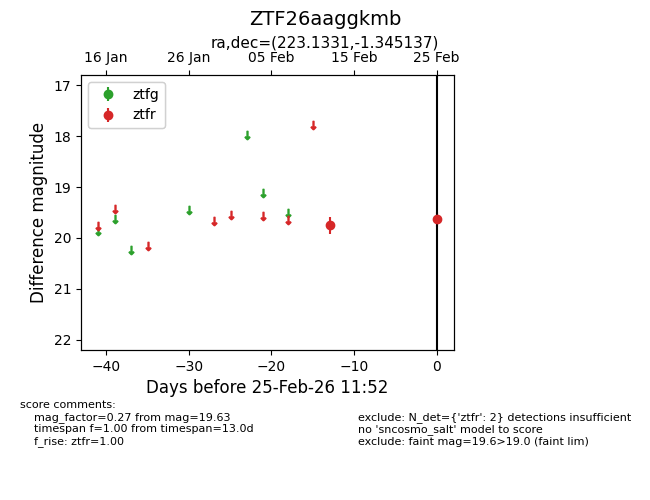
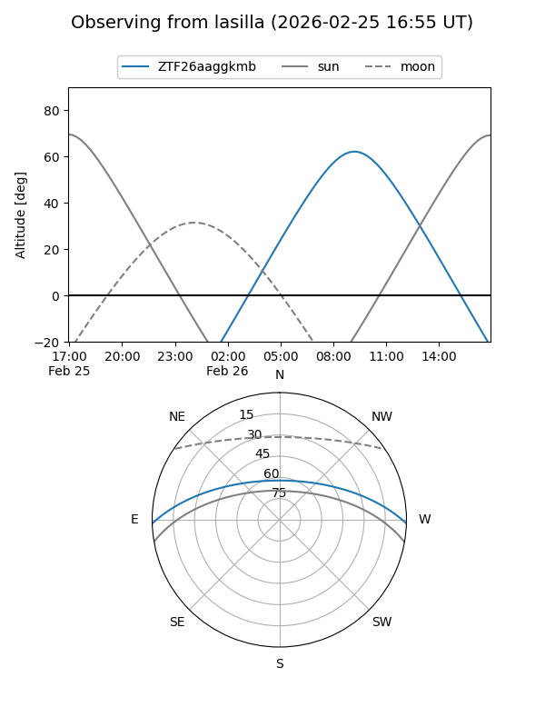
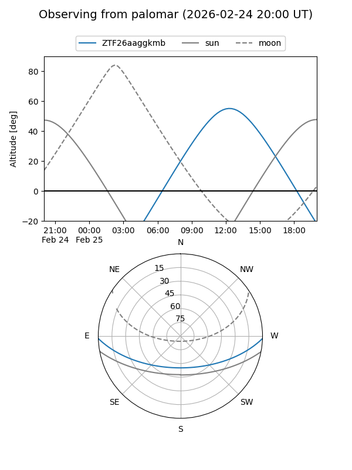
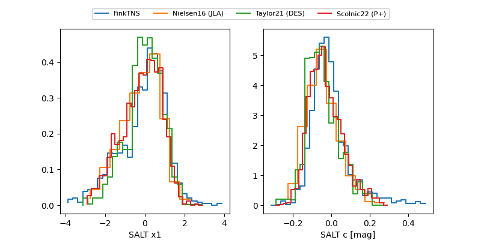

ZTF26aaggkmb
Target ZTF26aaggkmb at 2026-02-25 11:53
Aliases and brokers:
FINK: link
Lasair: link
ALeRCE: link
alt names
ZTF26aaggkmb (ztf,fink_ztf)
Coordinates:
equatorial (ra, dec) = 223.1331,-1.34514
equatorial (HMS+DMS) = 14:52:31.93,-01:20:42.49
galactic (l, b) = (353.4911,+49.26209)
Flags:
Photometry:
last ztfr=19.63
2 ztfr detections
Lightcurve

Visibility


Additional plots
